| 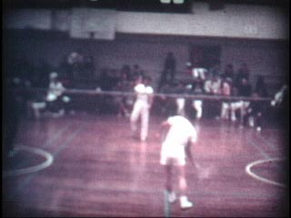 | 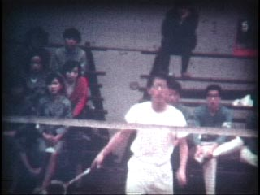 | 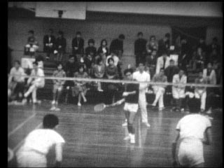 | 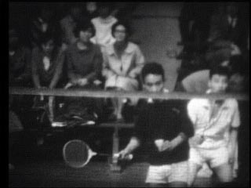 |
|
1965年秋 秋リーグ入替戦@国民体育館 横山(東大) 対 中山 邦(明治学院大) (14sec) |
1965年秋 秋リーグ入替戦@国民体育館 横山(東大) 対 中山 邦(明治学院大) (6sec) |
1965年秋 秋リーグ入替戦@国民体育館 北浦・横山(東大) 対 島田・木村(明治学院大) (6sec) |
1965年秋 秋リーグ入替戦@国民体育館 森本・木下(東大) 対 藤野・川島(明治学院大) (13sec) |
| 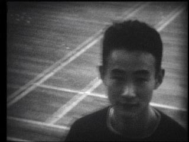 | 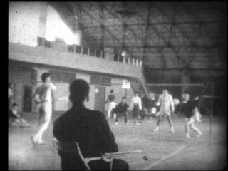 | 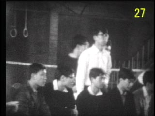 | 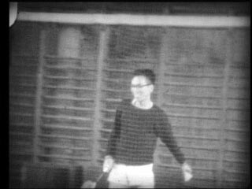 |
|
1965年秋 秋リーグ入替戦@国民体育館 試合後 木下，金丸夫妻 (8sec) |
1966年 国公立戦@東工大体育館 伊丹・川上(東大) 対 関・橋口(学芸大) (6sec) |
1966年 国公立戦@東工大体育館 応援者 鈴木，金丸夫妻 (9sec) |
1966年 国公立戦@東工大体育館 羽根打ち 神田 (7sec) |
| 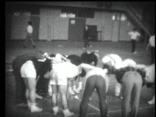 | 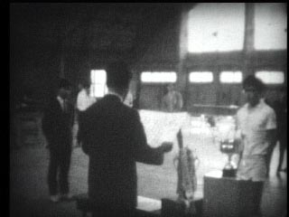 | 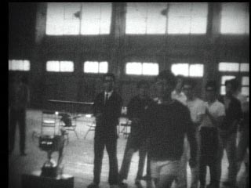 | |
|
1966年 国公立戦@東工大体育館 対一橋戦エール，表彰式 (9sec) |
1966年 国公立戦@東工大体育館 表彰式 北浦，木下 (8sec) |
1966年 国公立戦@東工大体育館 表彰式 横山，北浦 (10sec) |